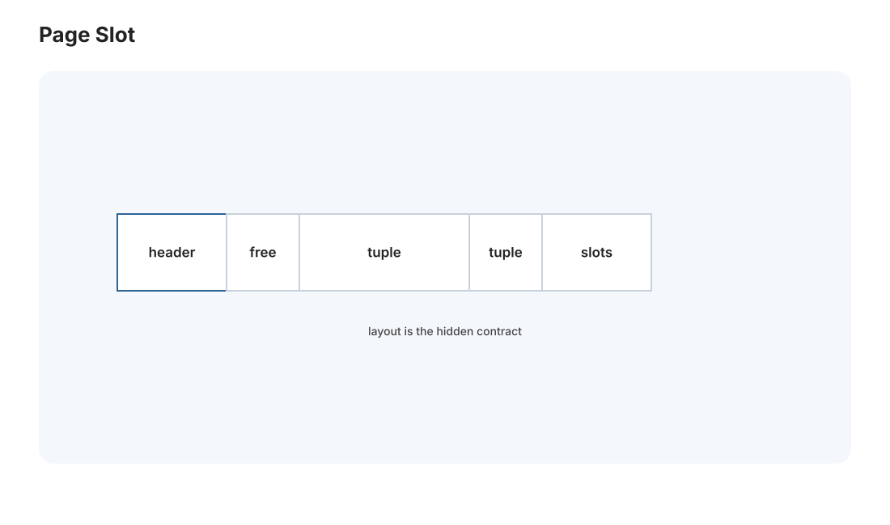
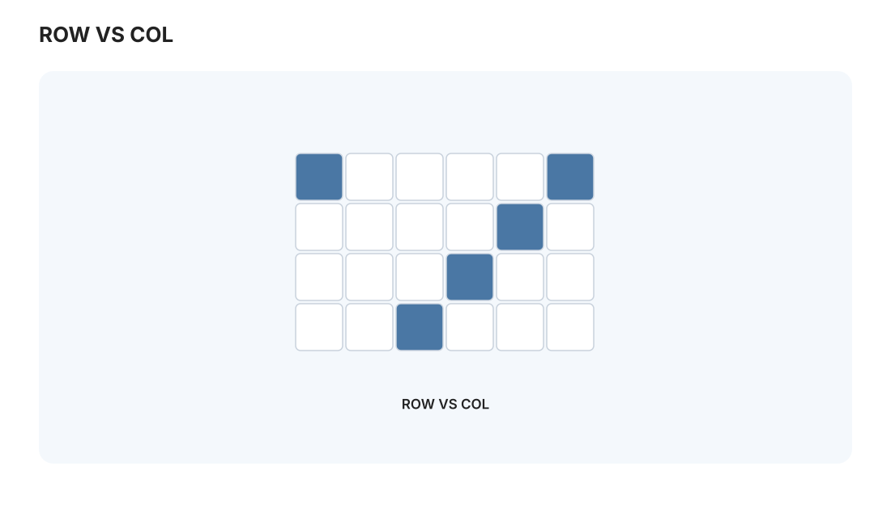
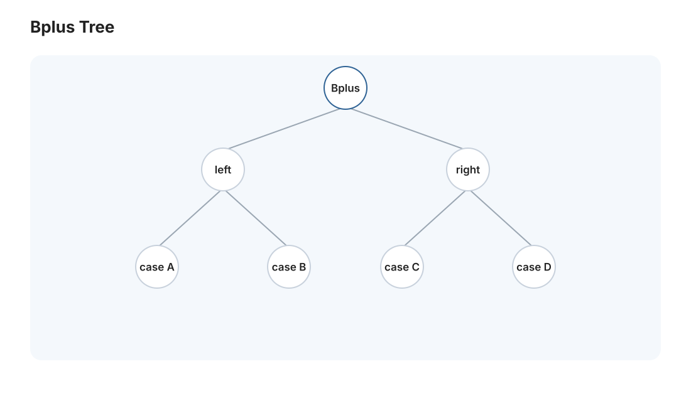

本页目录
数据库 I · 存储与索引
对标：CMU 15-445 前半 / Database Internals（Petrov）｜ 前置：csapp-02（存储层级）、os-03（磁盘、页缓存） 数据库是"把数据可靠、高效地存取"这件事做到极致的系统。你已是它的用户（Medusa 的
medusa-postgres、pgvector），这条线让你成为懂它内部的人。第一页讲最底层两件事：数据怎么在磁盘上按页组织，以及索引——为什么加一个索引能让查询从几秒变几毫秒，它底下的 B+ 树凭什么统治了数据库半个世纪。
1. 面向磁盘的设计：一切从"页"开始


数据库的第一性原理：数据比内存大、要持久化，所以面向磁盘设计（🔗 csapp-02 金字塔、os-03）。核心单位是页（page，通常 4~16 KB）——磁盘以块读写，数据库也以页为单位组织和缓存。
- 堆文件 + 页布局：表存成一堆页，每页里放若干元组（行），配一个槽目录（slot array）记录每行在页内的偏移——于是变长行、删除留空洞都能处理。行的定位符 = (页号, 槽号)。
- 缓冲池（buffer pool）：数据库自己管一块内存当磁盘的缓存（不完全信任 OS 页缓存，为了控制刷盘时机——这对 db-03 的恢复至关重要）。命中内存则快，未命中则从磁盘调页、满了按策略（LRU 变种如 LRU-K、Clock）换出。这本质上是 os-01/csapp-02 缓存思想在数据库里的重演，但数据库因为懂自己的访问模式，能做得比通用 OS 更聪明。
列存 vs 行存：传统行存（一行连续）适合 OLTP（事务，读写整行）；列存（一列连续）适合 OLAP（分析，只扫几列做聚合）——列存的连续性让压缩和向量化扫描起飞（🔗 perf 线）。"按查询模式选存储布局"是数据库性能的第一决策。
2. 索引：为什么快，代价是什么
没有索引，WHERE id = 42 要全表扫描（读每一页）。索引是一个额外的数据结构，把"列值 → 行位置"组织得便于查找——用空间和写入变慢，换查询变快。这个权衡是索引的全部本质：读多写少的列值得建索引，反之未必。
3. B+ 树：数据库索引之王【机理级】

为什么不是二叉搜索树、不是哈希表，而是 B+ 树？答案全在"面向磁盘"：
- 多路、矮胖：每个节点是一整页、含几百个键——于是几百万行的树只有 3~4 层。查一个键 = 3~4 次磁盘 I/O（且上层节点常驻缓冲池，实际更少）。二叉树高达几十层、每层一次 I/O，磁盘上完败。"用高扇出把树压矮"是对抗磁盘延迟的核心招式。
- 数据全在叶子、叶子串成链表：内部节点只存索引键导航，所有真实数据/指针在叶层，且叶子按序用指针连成链表——于是范围查询（
WHERE age BETWEEN 20 AND 30）超高效：定位起点后顺着叶链扫即可，不用回树。这是 B+ 树相比哈希索引的决定性优势（哈希只能等值查，不能范围、不能排序）。 - 自平衡：插入满了分裂、删除少了合并，永远保持矮而平衡——最坏情况仍 \(O(\log n)\)。
这就是 [实验 L05]：亲手实现 B+ 树的插入、分裂、范围扫描——数据库索引的心脏，写一遍就懂了 Postgres 的 CREATE INDEX 底下是什么。
哈希索引 vs B+ 树：哈希索引等值查 \(O(1)\) 更快，但不支持范围、排序、前缀——所以数据库默认索引几乎都是 B+ 树。LSM 树（LevelDB/RocksDB、写优化）是另一条路线：写入先进内存 + 顺序刷盘、后台合并——牺牲读、优化写，适合写密集场景（时序、日志）。B+ 树 vs LSM 是现代存储引擎的两大门派。
4. 索引的实战判断（Medusa 视角）
你天天在用索引，这里把决策讲透：
- 建在哪列：高频出现在 WHERE/JOIN/ORDER BY 的列。Medusa 的 articles.published_at（时间范围查）、events.entities（jsonb，用 GIN 索引）、article_id 外键都是典型。
- 复合索引的顺序：(a, b) 索引能加速 WHERE a=? AND b=? 和 WHERE a=?，但加速不了单独 WHERE b=?（最左前缀原则——因为 B+ 树按 a 先排）。
- 别过度索引：每个索引都拖慢写入、占空间。索引是给读优化、向写收税。
- 向量索引（你在用的 pgvector）：高维向量的近邻搜索用的是 HNSW / IVF 等近似索引（🔗 adv-01 的 LSH、数学站高维几何）——精确近邻在高维不可行，这是"维度诅咒"的工程妥协。
方法论：看懂 EXPLAIN ANALYZE（查询计划）是数据库调优的核心技能——它告诉你查询有没有用上索引、是全表扫还是索引扫、每步花多少。db-02 会专门讲怎么读它。
5. 练习与要点
例 1（B+ 树扇出数感） 页 8 KB、键 + 指针共 16 字节 → 每节点约 500 路。三层能存多少行？\(500^3 \approx 1.25\) 亿。"三次 I/O 定位一亿行"——亲手算一次，你就懂了矮胖树的威力。
例 2（最左前缀） 建了 (city, age) 复合索引，判断 WHERE city='SH'、WHERE age=30、WHERE city='SH' AND age=30 分别能否用上索引——这个真实的调优陷阱，很多工程师栽过。
例 3（读你自己的计划） 在 Medusa 的只读连接上对一个慢查询跑 EXPLAIN ANALYZE，找出是不是缺索引（Seq Scan on 大表 = 危险信号）——把本页理论用到你正在运营的库。\(\blacksquare\)
▶ 实验 L05（B+ 树）：
labs/L05-bplustree/—— 插入/分裂/合并/范围扫描，可视化树的生长。跑在 Mac（Python）。
📋 大 Project P02（第一阶段）· 存储引擎
教师版作业说明书，不提供完整解。 P02 分三阶段随 db-01/02/03 展开，最终交付一个能跑 SQL 子集、带索引、带事务恢复的迷你关系数据库。
P02-A · 页式存储与索引 - 学习目标：把“表是一堆页、索引是一棵页树、缓冲池是数据库自己的缓存”落成代码。 - 教师提供：统一磁盘文件格式说明、
PageId/RID/Tuple接口骨架、随机插入/删除测试、百万行数据生成器、B+ 树可视化脚本。 - 学生任务：① 页式堆文件 + 槽目录，支持变长行的 insert/delete/update/get；② 缓冲池，支持 pin/unpin、dirty page、LRU 或 Clock 淘汰；③ 持久化 B+ 树索引，支持等值查找、范围扫描、节点分裂与合并。 - 接口约束：页大小固定；所有磁盘访问必须经过缓冲池；RID 在行移动或删除后语义要清楚；B+ 树叶子必须按序串联。 - 验收测试：重启后数据与索引仍一致；百万行导入可完成；索引查询比全表扫快至少一个数量级；随机删除后范围扫描顺序正确。 - 评分重点：页格式 25%，缓冲池 25%，B+ 树正确性 35%，持久化与压力测试 15%。 - 延伸挑战：实现 LRU-K，并用一组顺序扫 + 热点查找混合负载解释它为什么优于朴素 LRU。
下一页：数据库 II——查询执行与优化：一条 SQL 怎么变成执行计划，优化器如何选出快的那条路。